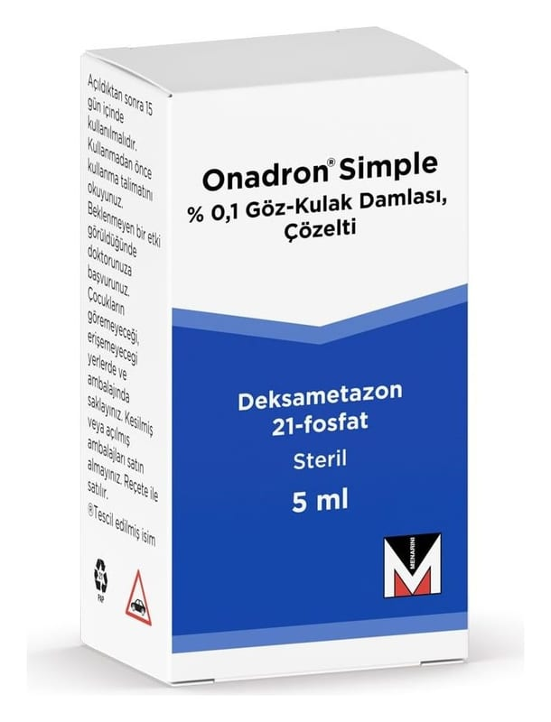

Onadron Simple % 0,1 Göz-Kulak Damlası, Çözelti (5 ml)

Ne için kullanılır
KT · Bölüm 1ONADRON®SIMPLE 5ml’lik beyaz renkli polietilen damlalıklı ve kapaklı beyaz renkli polipropilen şişelerde sunulan renksiz, berrak çözeltidir.
ONADRON®SIMPLE gözün ve kulağın infeksiyonlu olmayan dış inflamatuvar ve alerjik durumlarının ve operasyon sonrası inflamasyonun tedavisinde kullanılır.
ONADRON®SIMPLE, kortikosteroidler olarak adlandırılan bir grup ilaçtan biridir. Gözdeki ve kulaktaki inflamasyonun önlenmesine veya azaltılmasına yardımcı olur.
Göz yüzeyinin ve göz içindeki ön kısımın (ön segment) ve kulağın inflamasyonunun tedavisinde, operasyon sonrası inflamasyonun önlenmesinde veya tedavisinde kullanılır. Kızarıklık, ağrı ve şişme gibi inflamasyon belirtilerinin azaltılmasına yardımcı olur.